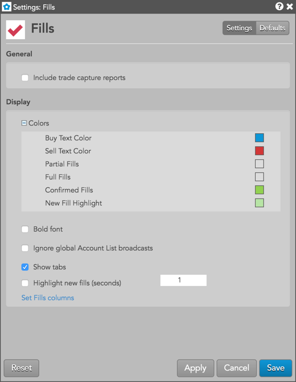

Right-click in the widget to open the context menu and select the following items:
These settings affect only the selected Fills widget. To update the default settings with these value for newly-opened Fills widgets, or to apply them to existing opened widgets, click Defaults.

{% include settings/fills-settings-local.html %} {% include filtering-columns.html %}